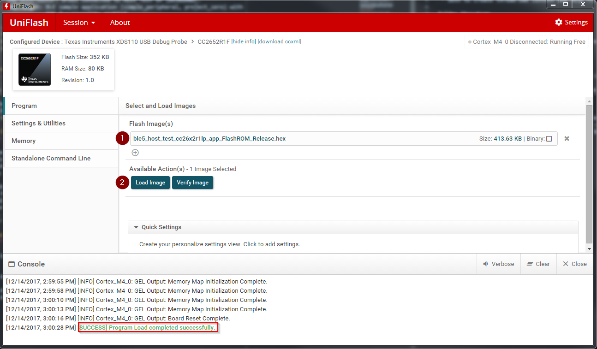

Setting up the BLE OAD Environment¶
This section will cover the steps required to setup a BLE OAD environment.
The BLE OAD topology is described below. Refer to Figure 65. for a review of the devices involved in an OAD.
- OAD Distributor: BTool connected to Host Test on CC26x2 LaunchPad.
- OAD Target: BLE sample application (
simple_peripheral,project_zero) with OAD functionality enabled.Note
TI provides mobile applications that support OAD, these are outside of the scope of the OAD guide. Refer to the Quick Start Guide for more information.
Prerequisites¶
This section requires the following hardware and software components
- 2x CC26x2 LaunchPad
- SimpleLink CC26x2 SDK installed
- UNIFLASH installed
OAD Target Setup¶
In order to perform a BLE OAD, an OAD capable image must be loaded onto the OAD target device. This section will cover the steps required to load the CC26x2 LaunchPad with an OAD enabled BLE image.
Navigate to the
simple_peripheral_oad_offchipfolder inside the TI-OpenThread Stack.Import the project into the workspace of your selected IDE.
- See the Quick Start Guide for instructions on how to work with your selected IDE.
Build the stack project
Build and flash the app project (use debug configuration)
Build the flash the BIM project (Important: Use debug configuration)
- The BIM debug configuration does not do CRC checks on the image, making it possible to flash an image straight from the IDE.
- If your device does not boot, it is likely that the release version of BIM, see Loading a Production Image for more info.
Verify the device has booted up and is advertising
- Verification: Open a terminal window with 115200 8N1 to the
XDS110 Class Application/User UARTport corresponding to your CC26x2 LaunchPad.- The console should display the text below, use it to get the BLE address.

Alternatively, you can get the BLE address of the device using UNIFLASH.
- See the screenshot below for how to do this in UNIFLASH.

OAD Distributor Setup¶
As per the Introduction section, the OAD Distributor is the device responsible for fragmenting an OAD enabled image in to chunks of OAD blocks and sending each block over the to the OAD Target device as they are requested.
In the case of BLE, the OAD Distributor is a combination of BTool running on
the PC connected to host_test running on a CC26x2 LaunchPad. host_test is a BLE
enabled network processor application. BTool is a PC tool that is capable of
interfacing to host_test and performing various BLE functions in addition to
OAD. For more information, refer to the host_test README file or the BTool
User’s Guide.
Flashing the host_test Image¶
See below for the steps to setup the host_test image on a CC26x2 LaunchPad.
- Navigate to
hexfilesfolder within the TI-OpenThread Stack.- Select the
host_test_*.hexfile.- Flash the above hexfile using UNIFLASH. See image below

Connecting BTool to host_test¶
BTool and host_test communicate via USB through the XDS110 UART back channel. See below for a diagram

Find the port used by the UART backchannel of the CC26x2 LaunchPad running host_test. This is the one with the name
XDS110 Class Application/User UARTOpen BTool (see the BTool executable in the tools folder of the TI-OpenThread Stack)
Use the following serial port settings, hit OK
- Port: <PORT_FROM_ABOVE_STEP>
- Other settings: 115200 8N1
This should open and initialize the host_test device.
Pressing the scan button should populate a list of devices in the log
- A screen shot of a properly initialized BTool session is shown below